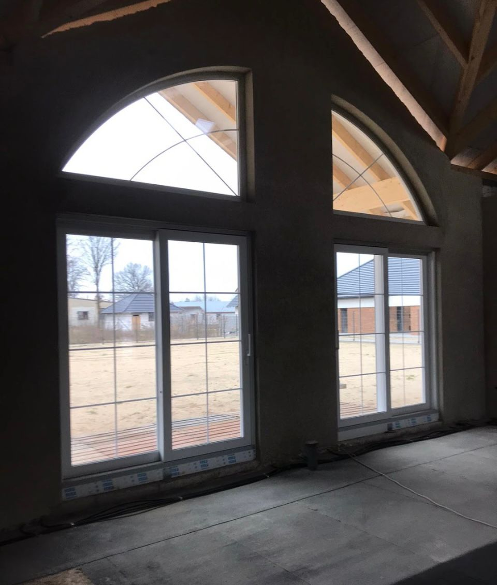
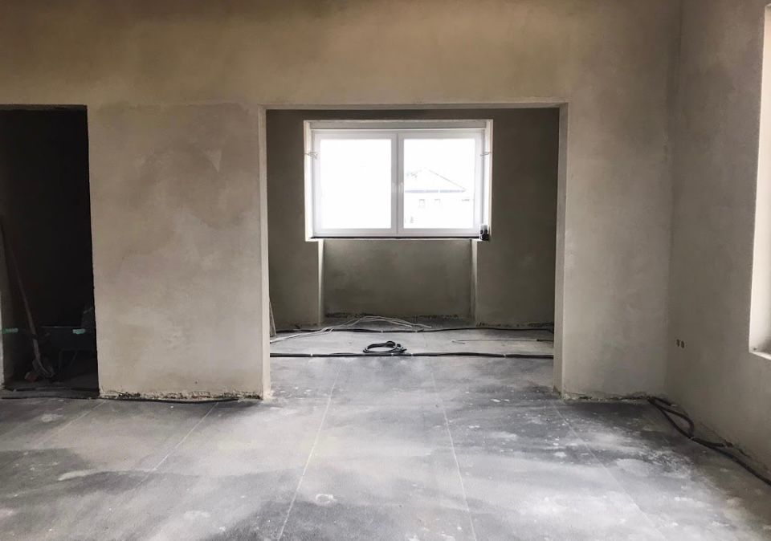
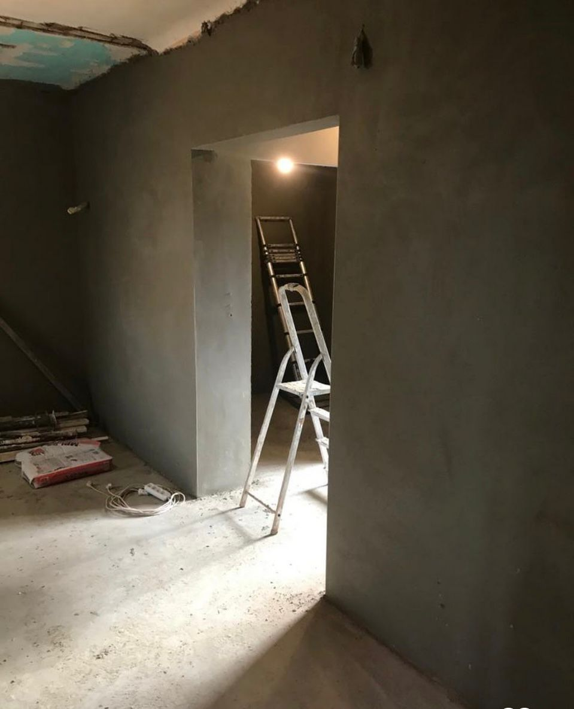
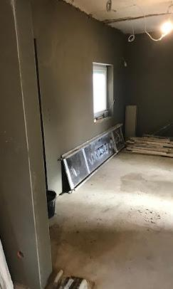
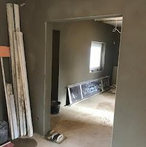
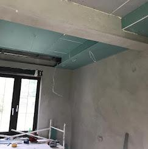
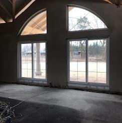
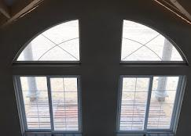
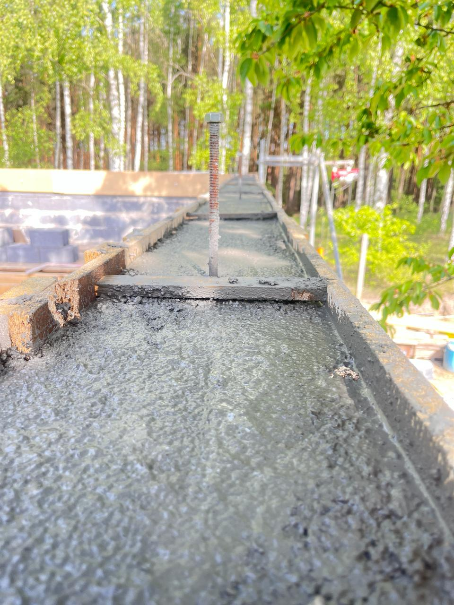

Tynki Maszynowe Zielona Góra – fachowo od A do Z
Wykonujemy tynki maszynowe gipsowe oraz cementowo‑wapienne dla domów jednorodzinnych i inwestycji przemysłowych. Dbamy o czystość, dokładność i terminy. Pracujemy w Zielonej Górze i w promieniu ok. 60 km.
- Dokładne przygotowanie podłoża i narożników
- Równe powierzchnie gotowe pod gładź lub malowanie
- Wycena i doradztwo gratis
- Gwarancja wykonania – umowa i protokół odbioru
Usługi
- Tynki maszynowe gipsowe / cementowo‑wapienne
- Elewacje i docieplenia
- Malowanie natryskowe
- Murowanie
- Adaptacje poddaszy (zabudowy GK)
Każde zlecenie wyceniamy indywidualnie po krótkim oglądzie lub rozmowie telefonicznej.
Kontakt
Tel: 883 396 577 WhatsApp
Wysyłając formularz akceptujesz kontakt telefoniczny lub mailowy w sprawie oferty.Galeria realizacji









Filmy z Naszych Realizacji
Adaptacja poddasza
Elewacja – etapy prac
FAQ – najczęstsze pytania
Ile trwa wykonanie tynków w domu jednorodzinnym?
Zwykle 3–7 dni roboczych w zależności od metrażu i złożoności.
Jak przygotować budowę?
Zapewnij dostęp do wody i prądu, uprzątnij ściany z luźnych elementów. Resztę zabezpieczymy na miejscu.
Czy robicie wycenę zdalnie?
Tak – wystarczy rzut, metraż i kilka zdjęć. Najlepiej jednak potwierdzić pomiarem na miejscu.